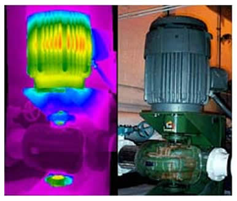

Our Amazing Works
Right here we've got something you gonna love

TokTok Fab Lab ( Workshop and educational mobile lab )
It’s a workshop and a mobile laboratory in the form of a mobile educational circus moves on four wheels between schools and villages and slums , accompanied by trainers , Factory contains several labs to teach students and trainees Science and Character process simplified manner in order to : 1 - creating a seed of thinking and creativity in young people. 2 - Deliver the concept of how things work and turn ideas into concrete facts and how easy it is. 3 - Teach students some of the theories of science and scientific manner using simplified and some practical experience. 4 - Teach young people the thought of collective action through the implementation of collective projects . 5 - Implementation of the students hands virtually all the trials and work on all machinery and equipment, which gives them self-confidence. 6 - Change the thought of students from marginalized villages thought to thought purely Agricultural Industrial solve the unemployment crisis . 7 - change a part of the culture of the community and his view of the work area and creative handwork.
TokTok Fab Lab
- 215
- 14
Crystal Asfour
* Crystals Continuing Machine
Crystal Asfour crystals continuing machine to prepare the required counting of the packed crystal quantity. The team assigned to this project succeeded to produce the required machine prototype and the financial and technical offer are to be presented to the company shortly .
* Crystals Quality Control Machine
Crystal Asfour crystals quality control machine in cooperation with national instruments. This project is a huge one as there is 500 million crystal produced each day some of it only two millimeter in height that needed to be examined and 3000 girl work to examine them using their naked eyes and they suffer the consequences of that. Image analysis was the solution using digital camera and real time processing unit and labview software produced by national instrument the team .
Crystal Asfour
- 369
- 86
Multi-Tasking Sugar Can Harvesting Machine
Sugarcane cultivation in Egypt faced many problems in the sugarcane harvest due to reluctance of workers harvest the cane and the difficulty of using machinery manufactured abroad for its large size and because of the fragmentation of agricultural holdings in Egypt and that the machinery locally manufactured until now primitive and cause a lot of waste. It is designed to harvest cane spatial fit the way agriculture in Egypt and carrying out several functions, including the servo is initially cut the green part of the upper stubble at the proper length.. As well as it’s mowers from the bottom when the appropriate length so as not to have a large portion of stubble, as well as not being cut off part of the horizontal bar first responsible for the growth of stubble to grow again and you are moving as soon as the mowers of the traffic. Could peel whilst traveling to cart the background.
Cotton Harvester Machine
Machine has been designed in order to harvest cotton commensurate with the nature of agriculture in Egypt in terms of the style and type of farming cotton cultivated and non-cultivated areas regularly and is attached to a farm tractor to reduce the cost of the machine, That's where the idea of this Machine it collects cotton by belting out a small hooks are then accumulated by pulling cotton air compressors in the pipeline for compilation in the wagon behind the tractor Agricultural.
Carvan
Is a mobile home on four wheels designed to suit the nature of the rugged terrain and climate of the deserts and the Arab countries, especially the Gulf area during vehicle movement 12 square meters and after settling a land area of 22 square meters
* They can be used in deserts and camping trips
* They can be used in deserts and camping trips

Gheras
Is the design of the application on the Android- mobile phone consists of : Database - Pictures - Videos - meteorological data -GPS Audio Access the information in the hands of every trader in the field of agriculture in his field Providing a means to transmit information in the forms printed and audio and video to their beneficiaries, where the program contains all the information you want to know for farms), the finest types of seeds - Brand cultivated in the region - soil type - sowing date - harvesting date - fertilization and appointments - control for pests and weeds irrigation scheduling, either within the program is linked to irrigation scheduling meteorological data via satellite.
Dried Fruits

The Idea is dried different types of fruit available throughout the year because it is difficult to store on the condition because it would cost more money so as not to damage the fruit it uses clean energy electricity, solar energy and natural gas is an environmentally friendly and used to compete in local market production capacity is relatively large .
Dried Fruits
- 440
- 35
Process technology to get rid of water hyacinth
Summed up his idea to reduce the cost of harvesting water hyacinth and twist of the plant and returns from the water after filtered to prevent the proliferation of the plant in the Nile and storing solid material for use in fuel production and material furfural after that which would lead to lowering the cost of the harvest to ten and turn the solids into useful materials. Show the idea of the device in the two kinds of self-running small canals and drains , and large type operator technician in the Nile , canals large and provider mowerer plant water where a tanker moving in lakes and swamps infested Board Nile summed up his idea in the reception hyacinth by belys water connector device to chop hyacinth and his time where the provider two ways one of it to exit the solid part and the other is going through the liquid portion provider of two stages of the purification of the first to get rid of impurities and buds and the second to get rid of bacteria and microbes outstanding and thus be ready for discharge to waters of the Nile specifications make it valid to aquatic organisms . As for the solid part , it is collected in a reactor added to some of the material and at a certain temperature at a certain time be output material furfural , a chemical organic liquid , interference in many industries , such as nylon , plastic and other fuels .
Machine drawing, engraving and printing by the computer
Operating is a changes occur to the metal to get to the desired shape, provided that the raw lose part of the size of the basic operating distance used CNC machines for parts sizes and shape Engineering required and that the removal of the layer of excess metal in the form of increases by machinery cutting, which is driven by machinery .
Flexible Fridge
Work unit cooling and air purification flexible to fit the shape variable for meat during the sale and that the work of the plastic casing transparent double ) corresponding to the specifications of health ( consisting of two layers between air thickness of no more than 5 centimeters to isolate the meat from external factors, This casing is composed of two halves linking together by weatherproof leaking air zippers or rappers customized and then injects air purified from bacteria and dust inside the casing and the air is pulled old purified and cooled again, and when he wants to butcher cut part of the meat to sell it is decoded zippers and remove the protective wrapping and after completion be as it was with and having a console separates the cooling in the case of opening the package and control the temperature .
Flexible Fridge
- 693
- 204
Other Projects
*Liquid soap machine
It’s a machine that is doing the work of quantitative production of liquid soap and adjust his basal (ph) , so check to the owner of the machine a chance in the competition in the public market a product with high efficiency and large production in less time.
*Machine production of candles
Summed up the idea of the machine in the production of candles and multiple forms that meet most of the requirements of the people of concerts , birthdays, etc. It is also able to produce a wax aromatherapy card in today's high productivity with which it can compete in the general market .
*Biofuel production project
Get rid of the idea of bio-fuels in the production of methane gas from waste cattle and agricultural residues , one of the most important sources of renewable energy are obtained biofuels analysis of the industrial plants and waste and animal remains by microbes with anaerobic digestion and this gas is the main component of natural gas.
*Duality pipes
This machine you wrap and drape iron pipes and cans to work harder shapes where drape cans iron pipes and cold without heating , which reduces the time required for the formation and increases accuracy. That's where the manual method was based on the physical powers of mourning here are either drape by motors
*Fiber glass work shop
In this workshop are manufactured fiber plates in various sizes are also producing many different shapes and molds on demand, such as chairs, bathtubs, toys and some large-sized statues hollow ....... etc.
Other Projects
- 693
- 204
About R&D (Research And Development )
The R&D within the factory was the main target of the unit. The office has succeeded to bring a twenty project from the industry like: • Producing organic Roselle instant powder for ROYAL FOR HERBS factories (prototype and samples were produced and accepted by the factory. • Producing organic Chamomile instant powder for ROYAL FOR HERBS factories (prototype and samples were produced and accepted by the factory. • Raising the quality of cacao powder and darkening its color without the rising of the PH number for the cacao factories in SOHAG. The project team has succeeded in producing the first samples. • Producing of sheets of dried mango and guava for a factory in SOHAG. • Transformation of a huge mechanical two axis balancing machine into a computerized one in cooperation with national instruments company in Cemex factory in Assiut. The project still wait the approval of the factory .
cemex
• Cemex crasher fixation and maintenance including mechanical maintenance of the vibration absorption system • Maintenance of a compression machine test unit for Hasan Alam construction company • Décor making for shops and retail stores in cooperation with internal trade modernization center ITMC • Cemex cafeteria building design and supervision • Cemex crasher fixation and maintenance including mechanical maintenance of the vibration absorption system • Cemex huge project for undersurface water elimination in the mines • Cemex crashers bases maintenance and oil leakage sealing • ALSFA industrial city in Assiut ambulance unit building assessment • Maintannace of a compression machine test unit for HasanAlam construction company • Décor making for shops and retail stores in cooperation with internal trade modernization center ITMC • Wood press maintenance AUIDA furniture making industries • Providing feasibility study for some start up small and medium enterprises working in the field of brick manufacturing and car battery production • Designing of the electric power system for TAHTA furniture production factory • Designing and manufacturing of 22 channel data acquisition system for A civil Eng. Dep.
Leak Detection
Using Ultrasound Analysis, We perform the needed tests to detect the sources and effects of any leakage including bearing and mechanical inspection, electrical inspection, and steam and valve inspections. * Ultrasound Inspector In all types of mechanical functions, heat and sound changes are the most reliable indicators of potential problems. Fluid flow patterns, line blockage, leaking valves, and steam traps are best-diagnosed using IR/UL inspection. Hydraulic systems produce sound and heat that can be observed through an integrated approach as can inspection of high voltage equipment. Using ultrasound, infrared, and vibration allows users to accurately determine the condition of operating equipment and identify the location of a problem. These technologies compliment each other and advance the goals of condition monitoring programs. Airborne Ultrasonic Analysis is a means of detecting and interpreting equipment sounds that are higher in frequency than normal human hearing; It is a nondestructive test method of detecting sounds that are associated with mechanical and electrical disorders, as well as a means of detecting structural discontinuities * The latest in this field : • Detect air pressure and vacuum leaks that costs up to 30% of the power loses in the industry. • Check Steam traps. • Check bearings, pumps, motors and compressors to do effective bearing greasing. • Detect arcing, tracking, and corona in electrical apparatus. Consulting • Cemex crasher fixation and maintenance including mechanical maintenance of the vibration absorption system • Maintenance of a compression machine test unit for Hasan Alam construction company • Décor making for shops and retail stores in cooperation with internal trade modernization center ITMC * Civil and mechanical consulting services: • Cemex cafeteria building design and supervision • Cemex crasher fixation and maintenance including mechanical maintenance of the vibration absorption system • Cemex huge project for undersurface water elimination in the mines • Cemex crashers bases maintenance and oil leakage sealing • ALSFA industrial city in Assiut ambulance unit building assessment • Maintannace of a compression machine test unit for HasanAlam construction company • Décor making for shops and retail stores in cooperation with internal trade modernization center ITMC • Wood press maintenance AUIDA furniture making industries • Providing feasibility study for some start up small and medium enterprises working in the field of brick manufacturing and car battery production • Designing of the electric power system for TAHTA furniture production factory • Designing and manufacturing of 22 channel data acquisition system for A civil Eng. Dep. * Environmental survey and energy saving study for about 50 factory all over Egypt in cooperation with the ECO (Environmental Compliance Office)including: • El ALAMIA for Natural water • Swiss company for cotton cloth • garments and terry towels industry • AM food industry • VERTA paper making • ALRADWAN for engineering industries • HORAS for plastic
Leak Detection
- 369
- 86
Vibration Measurement & Analysis
Vibration analysis allows the maximum interval between repairs to be realized through monitoring the actual mechanical condition of a piece of rotating machinery. Equipment down time is not required for monitoring activities to occur. The monitoring, in turn, directly minimizes the number and cost of unscheduled machine outages created by component failures. * Vibration Analysis is predicated on two basic facts: 1. All common failure modes have distinct vibration frequency components that can be isolated and identified. 2. The amplitude of each distinct vibration component will remain constant unless there is a change in the operating dynamics of the machinery. Monitoring the vibration from machinery can provide a direct correlation between the mechanical condition and recorded vibration data of each machine. Vibration analysis can be used to identify specific degrading machine components or failure modes of machinery before serious damage occurs.

Condition Monitoring
A major and essential component of predictive maintenance, which allows you to schedule and perform the needed maintenance before serious and costly machine failure occurs. We Offer these services as a cost effective step towards an increased production rate, improved machinery performance quality, and increase in your equipments lifetime. It also results in the avoidance minimization of machine downtime and repair delays, and needless to say the noticeable decrease in maintenance frequency and costs
Shaft Alignment
The very basic step required for machinery installment before its put to service and it is also a vital and unavoidable step necessary after dismounting of your machine. Our engineers guarantee the meticulousness of their every step while handling your machinery's shaft alignment, which is performed through one of the following processes: • Laser alignment for the most precise alignment of horizontal and vertical machines. • Couplings, pulleys, cardan shafts, Soft foot, thermal compensation and machine trains. • Live adjustment. * Shaft misalignment is responsible for up to 50% of all costs related to rotating machinery breakdowns. Shafts can have angular and parallel misalignment and usually both occur at once in both the horizontal and vertical planes. The possible consequences of shaft misalignment are serious to any company’s bottom line and include: • Increased friction and thereby energy consumption • Premature bearing and seal failure • Premature shaft and coupling failure • Excessive seal lubricant leakage • Failure of coupling and foundation bolts • Increased vibration and noise
Shaft Alignment
- 215
- 14
Dynamic Balance
Our onsite balancing services act as one of our other specialties in condition monitoring options, where we work on reducing your machine's vibration and the stress that could add on to its performance. Balancing of rotating machinery becomes an essential and vital demand in order to insure the reliable operation of newly designed rotating machinery , particularly turbo machinery which is being designed to operate at much higher speeds than before. The technology of field balancing has evolved from analog instruments and estimated correction weights to our age of advanced diagnostic tools to determine that unbalance does indeed exist and technology to estimate trial weights, correction weights and vectors to locate the heavy spot to apply counteractive weights. Balancing rotating equipment within its own bearings is a benefit in that the unit will respond to correction and maintain that correction when put into service. Also, problems, which share many characteristics of unbalance, can be diagnosed and corrected which eliminate down time. Keeping machinery balance within specification definitely prolongs machine wear and reduces expenses due to premature failures and component wear.
Dynamic Balance
- 375
- 102

Dynamic Balance
We diagnose your machinery as a proactive action to measure any development of faults-conditions; we do so through: • Measuring and analyzing rotating equipment's vibration. • Designing,implementing & optimizing condition monitoring systems. • Troubleshooting rotating equipment diagnosed with excessive vibrations. • Performing special machine testing including natural frequencies, critical speed determination, Operation Deflection Shapes (ODS), and OMA analysis.
Dynamic Balance
- 440
- 35
Thermograghy
Because there are multiple sources of the infrared energy, it is difficult to get an accurate temperature of an object using this method. A thermal imaging camera is capable of performing algorithms to interpret that data and build an image. Although the image shows the viewer an approximation of the temperature at which the object is operating, the camera is actually using multiple sources of data based on the areas surrounding the object to determine that value rather than detecting the actual temperature. An influential method of practically monitoring, sensing, and recording the heat and temperature of your machinery.We use it as an effective way of assisting us in troubleshooting any electrical, mechanical, and structural system. All objects emit infrared energy (heat) as a function of their temperature. The infrared energy emitted by an object is known as its heat signature. In general, the hotter an object is, the more radiation it emits. A thermal imager (also known as a thermal camera) is essentially a heat sensor that is capable of detecting tiny differences in temperature. The device collects the infrared radiation from objects in the scene and creates an electronic image based on information about the temperature differences. Because objects are rarely precisely the same temperature as other objects around them, a thermal camera can detect them and they will appear as distinct in a thermal image. * Advantages of thermography : • It shows a visual picture so temperatures over a large area can be compared. • It is capable of catching moving targets in real time. • It is able to find deteriorating, i.e., higher temperature components prior to their failure. • It can be used to measure or observe in areas inaccessible or hazardous for other methods. • It is a non-destructive test method. • It can be used to find defects in shafts, pipes, and other metal or plastic parts. • It can be used to detect objects in dark areas.
Thermograghy
- 512
- 36
Electric Motor And Signature Analysis
Motor Current Signature Analysis (MCSA) is a technique used to determine the operating condition of AC induction motors without interrupting production. MCSA techniques can be used in conjunction with vibration and thermal analysis to confirm key machinery diagnostic decisions. MCSA operates on the principle that induction motor circuits can, in essence, be viewed as a transducer. By clamping a Hall Effect Current sensor on either the primary or secondary circuit, fluctuations in motor current . Using the dynamic motor analyzer, we can perform seven major functions to enhance a preventive/predictive maintenance programs. Within these functions evaluate the incoming power, motor and load utilizing a system wide approach to predictive maintenance, troubleshooting and quality assurance. This motor analysis offers a wide variety of capabilities for the specialist to understand the condition of the rotating system * These tests are: • Power Quality: Voltage level, voltage unbalance, harmonics distortion, total distortion, power, harmonics. • Machine Performance: Payback period, effective service factor, load, operating condition, efficiency. • Current: Current level, current unbalance. • Spectrum: Rotor bar, V/I spectra, demodulated spectra. • Connections: Waveforms, ABC/SYM components, phasors.
• TokTok Fab Lab
• Vertical wind turbine
• Flexible Fridge
• Dried Fruits
• Cotton Harvester Machine
• Multi-Tasking Sugar Can Harvesting Machine
• Process Technology To Get Rid Of Water Hyacinth
• Integrative Agriculture
• Dishwasher
• Blocker shocks for cars
Researchers
• Dr.Eng. Wael Mahmoud Khair Aldein
• Dr.Eng. Ahmed Saad
• Eng. Mohamed Yaseen
• Eng. Ahmed abdoh
• Eng. Mohamed hareth
• Eng. Hasan Abd Al Ati
• Eng. Mohamed khalifa
• Eng. Mohamed Tantawy
• Eng. Amr Awad
1)Technical diplomas Technical diplomas aims to rehabilitate technical staff to a high level of training, both theoretical and practical, in order to have the ability to evolve and keep pace with the labor market and deal with the challenges of different work, and these diplomas are : • Civil Construction and Architecture Technician Diploma. • Petroleum Technician Diploma. • Measure space Technician Diploma. • Medical tests and chemical Technician Diploma. • Maintenance medical devices Technician Diploma. 2) Language and Engineering courses This kind of offers courses for college students enrolled in any speciality, as well as graduates who have the desire to develop themselves and improve their level of education to be ready and abreast of the labor market and these courses: IT & engineering courses Human Resource & Language courses 3)Scholarships for graduates Is a grant offered to university graduates from all disciplines of others attending functions in their field, as well as non-qualified to engage in the labor market to make them able to keep pace, and these grants are: • E-commerce /E –marketing. • Graphics. • Network.
Language Courses
English Language (Diploma general for 60 hours ... or 12 levels each level general level 24 hours ... or conversation level 6 levels 24 hours
TOEFL PBT - TOEFL IPT - IELTS
Technical English for Engineers
English for Nursing Diploma
Marketing and E-Commerce
- French (4 stages)
- German language
- Language Spanish.
- Italian Language
Human Resource Courses
HD / HR And Communication skills
Course instructors prepare TOT
Prepare language instructors
Preparation trained human development and human resources
* Heavy Equipment(operation and components )
* Internal combustion diesel engine.(operation , components and machining )
* Hydraulic systems in heavy equipment.
* Maintenance Management and Roots causes analysis
* Lubrication and Greasing
* Safety (Unsafe Acts, unsafe conditions and Defensive Driving.)
Mechanical Power
* Heat excharger design, construction, maintenance and applications
* Fire fighting
* HAVC
Welding course
* Applied welding technology
* Liquid penetrant test (PT)
* Magnetic particle level test (MT)
* Ultrasonic test (UT)
* Radiographic test (RT)
Mechatronics course
* Classic Control Basic Applications
* PLC Basic Applications
* PLC Advanced Applications
* SCADA Systems Advanced Applications
* DCS Systems Advanced Applications
* Maintenance & Troubleshooting of industrial Control Systems
* Industrial Motors & Drives
Information Technology
* Linux server administrator
* Embedded Linux
* Windows server
* CCNA
* Android
Electrical Power Engineering Skills
* Electronics(level1 : analog & digital electronics)
* Electronics(level2 : power & Industrialelectronics)
* AutoCAD Electrical Basic Applications
Programming & Software
* LabVIEW AdvancedApplications
* Matlab (programing & Simulink)
* JAVA Programming
* C++ Programming
Software
* Solid works level l
* Solid works level II
Embedded Systems Applications
* Microcontrollers
* Atmel microcontrollers
* Ardino
• Funding agencies, domestic and foreign: * guide supporters and donors * guide supporters and donors for graduate studies, projects and awards


{kind=link}
{kind=link}
{kind=link}
{kind=link}
{kind=link}
{kind=link}
{kind=link}
{kind=link}
{kind=link}
{kind=link}
{kind=link}
{kind=link}
.jpg){kind=link}